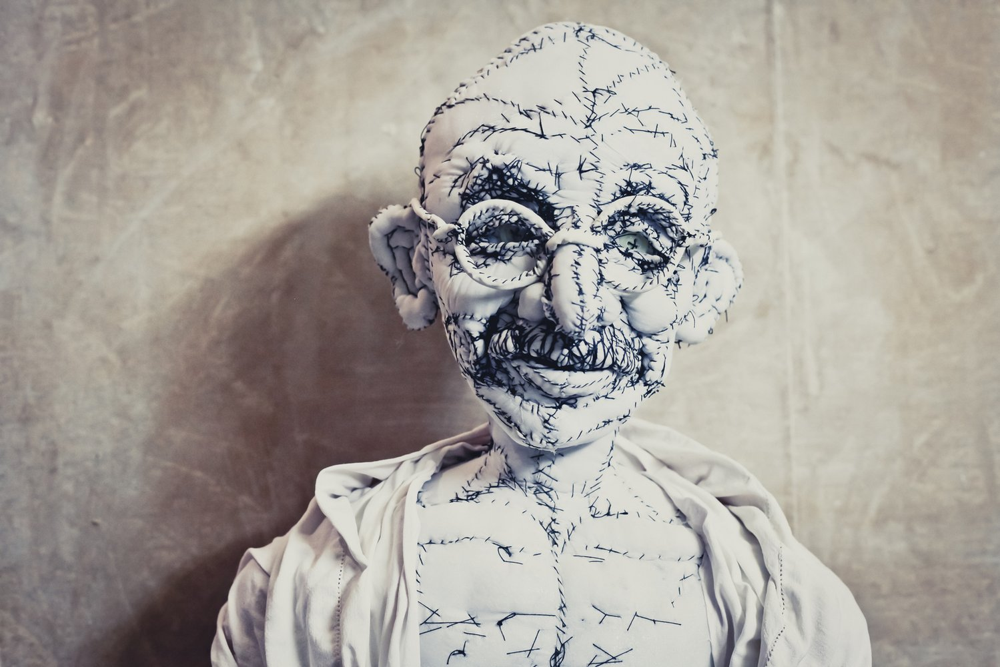
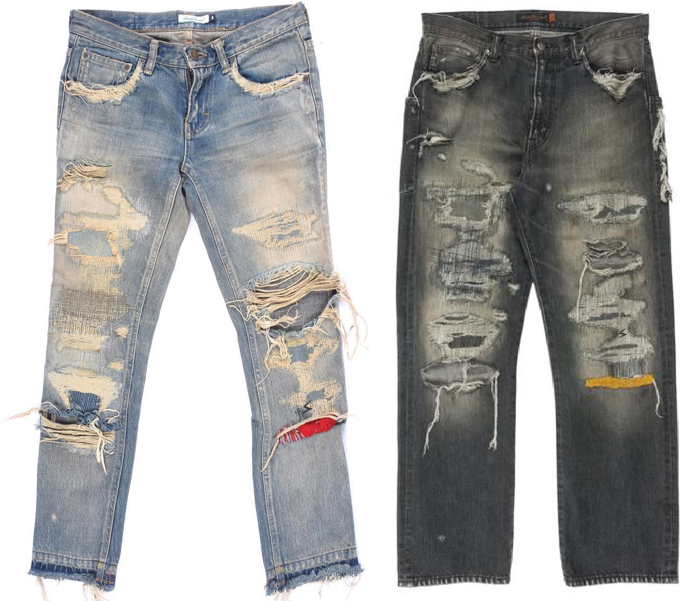
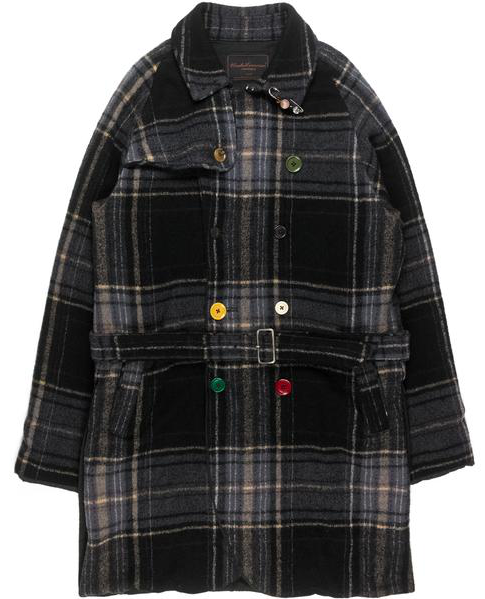

Beauty in Imperfection
Ghandi by Anne Valérie Dupond.
Sharing the But Beautiful name with AW94, Takahashi’s second Undercover collection, Autumn Winter 2004 consists of some of the most sought-after Undercover items of all time. Inspired by artist Anne-Valérie Dupond and her doll sculptures, Takahashi aims to create items that are gorgeous, yet flawed in construction (Silver League, “Double Breasted Coat.”). Like Autumn Winter 2003, models on the Paris runway were styled to look like dolls. Head coverings and accessories were made to look like vintage stuffed doll parts.
AW04 68 Yarn Jeans from groupienyc (left) and Silver League (right).
With But Beautiful came the now legendary 68 Yarn Jeans. Each pair is hand-distressed in a unique way, so no two pairs are alike. Yarn colors include red, blue, orange, green, black, white and yellow. Takahashi’s doll inspiration can be seen with the unique distressing on each pair, and the yarn stripe and lighting bolt detailing. Retro-ed in SS10 and in SS16, the yarn-across-the-knee denim is one of the most recognizable Undercover items of all time.
AW04 Double Breasted Wool Trench Coat from Silver League.
Noting the details of this trench coat bring out the DIY style and youthful feel of But Beautiful. Mismatched buttons, safety pins, and a plaid textile resemble elements of a homemade doll. Small details like these are signature to Undercover and reappear with every garment.
Back to Top